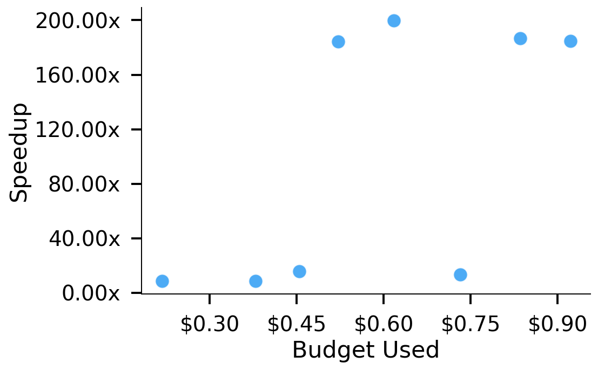
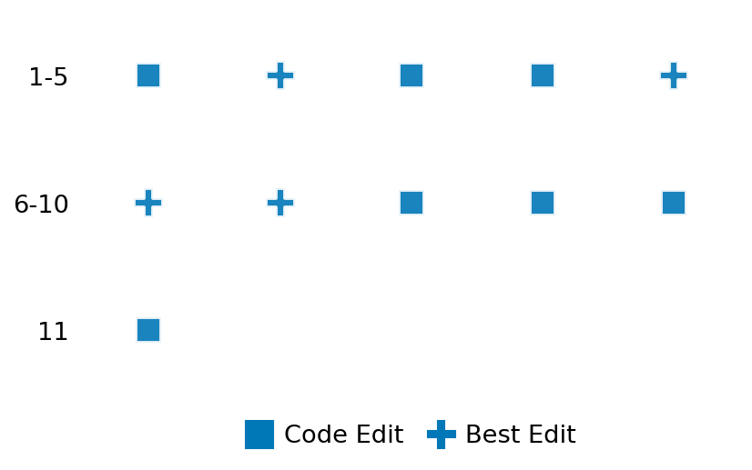

SETTING:
You're an autonomous programmer tasked with solving a specific problem. You are to use the commands defined below to accomplish this task. Every message you send incurs a cost—you will be informed of your usage and remaining budget by the system.
You will be evaluated based on the best-performing piece of code you produce, even if the final code doesn't work or compile (as long as it worked at some point and achieved a score, you will be eligible).
Apart from the default Python packages, you have access to the following additional packages:
- cryptography
- cvxpy
- cython
- dace
- dask
- diffrax
- ecos
- faiss-cpu
- hdbscan
- highspy
- jax
- networkx
- numba
- numpy
- ortools
- pandas
- pot
- psutil
- pulp
- pyomo
- python-sat
- pythran
- scikit-learn
- scipy
- sympy
- torch
YOUR TASK:
Your objective is to define a class named `Solver` in `solver.py` with a method:
```
class Solver:
def solve(self, problem, **kwargs) -> Any:
"""Your implementation goes here."""
...
```
IMPORTANT: Compilation time of your init function will not count towards your function's runtime.
This `solve` function will be the entrypoint called by the evaluation harness. Strive to align your class and method implementation as closely as possible with the desired performance criteria.
For each instance, your function can run for at most 10x the reference runtime for that instance. Strive to have your implementation run as fast as possible, while returning the same output as the reference function (for the same given input). Be creative and optimize your approach!
Your messages should include a short thought about what you should do, followed by a _SINGLE_ command. The command must be enclosed within ``` and ```, like so:
<Reasoning behind executing the command>
```
<command>
```
IMPORTANT: Each set of triple backticks (```) must always be on their own line, without any other words or anything else on that line.
Here are the commands available to you. Ensure you include one and only one of the following commands in each of your responses:
- `edit`: Replace a range of lines with new content in a file. This is how you can create files: if the file does not exist, it will be created. Here is an example:
```
edit
file: <file_name>
lines: <start_line>-<end_line>
---
<new_content>
---
```
The command will:
1. Delete the lines from <start_line> to <end_line> (inclusive)
2. Insert <new_content> starting at <start_line>
3. If both <start_line> and <end_line> are 0, <new_content> will be prepended to the file
Example:
edit
file: solver.py
lines: 5-7
---
def improved_function():
print("Optimized solution")
---
- `ls`: List all files in the current working directory.
- `view_file <file_name> [start_line]`: Display 100 lines of `<file_name>` starting from `start_line` (defaults to line 1).
- `revert`: Revert the code to the best-performing version thus far.
- `reference <string>`: Query the reference solver with a problem and receive its solution. If the problem's input is a list, this command would look like:
```
reference [1,2,3,4]
```
- `eval_input <string>`: Run your current solver implementation on the given input. This is the only command that shows stdout from your solver along with both solutions. Example:
```
eval_input [1,2,3,4]
```
- `eval`: Run evaluation on the current solution and report the results.
- `delete`: Delete a range of lines from a file using the format:
```
delete
file: <file_name>
lines: <start_line>-<end_line>
The command will delete the lines from <start_line> to <end_line> (inclusive)
Example:
delete
file: solver.py
lines: 5-10
```
- `profile <filename.py> <input>`: Profile your currently loaded solve method's performance on a given input. Shows the 25 most time-consuming lines. Requires specifying a python file (e.g., `solver.py`) for validation, though profiling runs on the current in-memory code.
Example:
```
profile solver.py [1, 2, 3]
```
- `profile_lines <filename.py> <line_number1, line_number2, ...> <input>`: Profiles the chosen lines of the currently loaded code on the given input. Requires specifying a python file for validation.
Example:
```
profile_lines solver.py 1,2,3 [1, 2, 3]
```
**TIPS:**
After each edit, a linter will automatically run to ensure code quality. If there are critical linter errors, your changes will not be applied, and you will receive the linter's error message. Typically, linter errors arise from issues like improper indentation—ensure your edits maintain proper code formatting.
**Cython Compilation:** Edits creating or modifying Cython (`.pyx`) files will automatically trigger a compilation attempt (requires a `setup.py`). You will be notified if compilation succeeds or fails. If it fails, the edit to the `.pyx` file will be automatically reverted.
If the code runs successfully without errors, the in-memory 'last known good code' will be updated to the new version. Following successful edits, you will receive a summary of your `solve` function's performance compared to the reference.
If you get stuck, try reverting your code and restarting your train of thought.
Do not put an if __name__ == "__main__": block in your code, as it will not be ran (only the solve function will).
Keep trying to better your code until you run out of money. Do not stop beforehand!
**GOALS:**
Your primary objective is to optimize the `solve` function to run as as fast as possible, while returning the optimal solution.
You will receive better scores the quicker your solution runs, and you will be penalized for exceeding the time limit or returning non-optimal solutions.
Below you find the description of the task you will have to solve. Read it carefully and understand what the problem is and what your solver should do.
**TASK DESCRIPTION:**
Convex Quadratic Check Problem
The goal of this task is to check whether the given quadratic function
f(x) = 1/2 * x.T * P * x + q.T * x + r
in terms of n-dimensional vector x is convex or not.
Input: A dictionary of keys:
- "P": A list of n lists, each containing n floats. This represents an n-by-n matrix at the quadratic term of function f.
- "q": A list of n floats. This represents an n-dimensional vector in the linear term of function f.
- "r": float representing the constant term of function f.
Example input:
{
"P": [[1.0, 2.0, 3.0],
[2.0, 3.0, 2.0],
[3.0, 2.0, 1.0]],
"q": [-1.0, 2.0, -1.0],
"r": 3.0
}
Output:
A boolean indicating whether the given function f is convex or not.
Example output:
False
Category: convex_optimization
Below is the reference implementation. Your function should run much quicker.
from typing import Any
import numpy as np
| 01: def solve(self, problem: dict[str, np.ndarray]) -> dict[str, Any]:
| 02: """
| 03: Solves a given convex quadratic check problem by checking convexity.
| 04:
| 05: Args:
| 06: problem: A dictionary with problem parameters:
| 07: - P: symmetric matrix for quadratic term,
| 08: - q: vector for linear term,
| 09: - r: scalar for constant term.
| 10:
| 11: Returns:
| 12: A boolean indicating whether the given function f is convex or not.
| 13:
| 14:
| 15: NOTE: Your solution must pass validation by:
| 16: 1. Returning correctly formatted output
| 17: 2. Having no NaN or infinity values
| 18: 3. Matching expected results within numerical tolerance
| 19: """
| 20: P = np.array(problem["P"])
| 21: eigvals = np.linalg.eigvals(P)
| 22: if np.all(eigvals >= 0.0):
| 23: return True
| 24: return False
| 25:
This function will be used to check if your solution is valid for a given problem. If it returns False, it means the solution is invalid:
from typing import Any
import numpy as np
| 01: def is_solution( problem: dict[str, np.ndarray], solution: dict[str, Any]) -> bool:
| 02: """
| 03: Check if the obtained solution is valid for the given problem.
| 04:
| 05: Args:
| 06: problem: a dictionary of problem instance containing parameters.
| 07: solution: proposed solution to the problem.
| 08:
| 09: Returns: a boolean indicating whether the given solution is actually the solution.
| 10: """
| 11:
| 12: # Check the solution type
| 13: if not isinstance(solution, bool):
| 14: logging.error("Solution is not boolean.")
| 15: return False
| 16:
| 17: # Solve the problem with numerical solver
| 18: reference_solution = solve(problem)
| 19:
| 20: # Check the solution
| 21: if solution != reference_solution:
| 22: logging.error("Proposed solution is not optimal.")
| 23: return False
| 24:
| 25: # All checks passed
| 26: return True
| 27:
 AlgoTuner Trajectory
AlgoTuner Trajectory
AlgoTune Task:
convex_quadratic_check
Model:
Gemini 2.5 Pro
Speedup
172.775x
Total Budget
$1.00
Initial System Prompt
AlgoTune Task Description
Convex Quadratic Check Problem
The goal of this task is to check whether the given quadratic function
f(x) = 1/2 * x.T * P * x + q.T * x + r
in terms of n-dimensional vector x is convex or not.
Input: A dictionary of keys:
- "P": A list of n lists, each containing n floats. This represents an n-by-n matrix at the quadratic term of function f.
- "q": A list of n floats. This represents an n-dimensional vector in the linear term of function f.
- "r": float representing the constant term of function f.
Example input:
{
"P": [[1.0, 2.0, 3.0],
[2.0, 3.0, 2.0],
[3.0, 2.0, 1.0]],
"q": [-1.0, 2.0, -1.0],
"r": 3.0
}
Output:
A boolean indicating whether the given function f is convex or not.
Example output:
False
Category: convex_optimization
Reference Implementation
from typing import Any
import numpy as np
def solve(self, problem: dict[str, np.ndarray]) -> dict[str, Any]:
"""
Solves a given convex quadratic check problem by checking convexity.
Args:
problem: A dictionary with problem parameters:
- P: symmetric matrix for quadratic term,
- q: vector for linear term,
- r: scalar for constant term.
Returns:
A boolean indicating whether the given function f is convex or not.
NOTE: Your solution must pass validation by:
1. Returning correctly formatted output
2. Having no NaN or infinity values
3. Matching expected results within numerical tolerance
"""
P = np.array(problem["P"])
eigvals = np.linalg.eigvals(P)
if np.all(eigvals >= 0.0):
return True
return FalseBest AlgoTuner-Generated Code
solver.py
from typing import Any
import numpy as np
from scipy.linalg import eigh, cholesky
class Solver:
def solve(self, problem: dict, **kwargs) -> Any:
"""
Checks if a quadratic function's Hessian matrix P is positive semidefinite.
This uses a multi-layered strategy, ordered by computational complexity:
1. O(n) check for negative diagonal entries (necessary condition).
2. O(1) fast path for 2x2 matrices.
3. O(n^2) optimized check for diagonal matrices.
4. O(n^2) check for diagonal dominance (sufficient condition).
5. O(n^3) Cholesky decomposition to check for positive definiteness.
6. O(n^3) eigenvalue calculation as the final, most general check.
"""
P = np.array(problem["P"], dtype=np.float64)
n = P.shape[0]
if n == 0:
return True
TOL = -1e-9
# Fast path 1: O(n) check on diagonal elements.
diag_P = np.diag(P)
if np.any(diag_P < TOL):
return False
# Fast path 2: O(1) special case for 2x2 matrices.
if n == 2:
# For a 2x2 matrix with non-negative diagonal, it is PSD iff its determinant is non-negative.
return bool(P[0, 0] * P[1, 1] - P[0, 1] * P[1, 0] >= TOL)
# Fast path 3: O(n^2) optimized check for diagonal matrices.
# If a matrix is diagonal and its diagonal elements are non-negative, it is PSD.
# This check avoids creating a temporary O(n^2) array, making it faster.
if np.count_nonzero(P) == np.count_nonzero(diag_P):
return True
# Fast path 4: O(n^2) check for diagonal dominance (sufficient condition for PSD).
radii = np.sum(np.abs(P), axis=1) - np.abs(diag_P)
if np.all(diag_P >= radii):
return True
# Attempt 5: Cholesky decomposition. A very fast O(n^3) test for positive definiteness.
try:
cholesky(P, lower=True, overwrite_a=False, check_finite=False)
return True
except np.linalg.LinAlgError:
# Cholesky failed: matrix is not positive definite. Proceed to eigenvalue check.
pass
# Attempt 6: Smallest eigenvalue check. This handles singular PSD and indefinite cases.
try:
min_eig_val = eigh(P, eigvals_only=True, subset_by_index=[0, 0],
check_finite=False, overwrite_a=True)[0]
return bool(min_eig_val >= TOL)
except (ValueError, np.linalg.LinAlgError):
# Fallback: If the specialized eigenvalue computation fails, compute all eigenvalues.
P_fallback = np.array(problem["P"], dtype=np.float64)
eigenvalues = eigh(P_fallback, eigvals_only=True, check_finite=False, overwrite_a=True)
return bool(np.all(eigenvalues >= TOL))Speedup vs Budget Plot
Speedup vs Budget

Action Sequence
